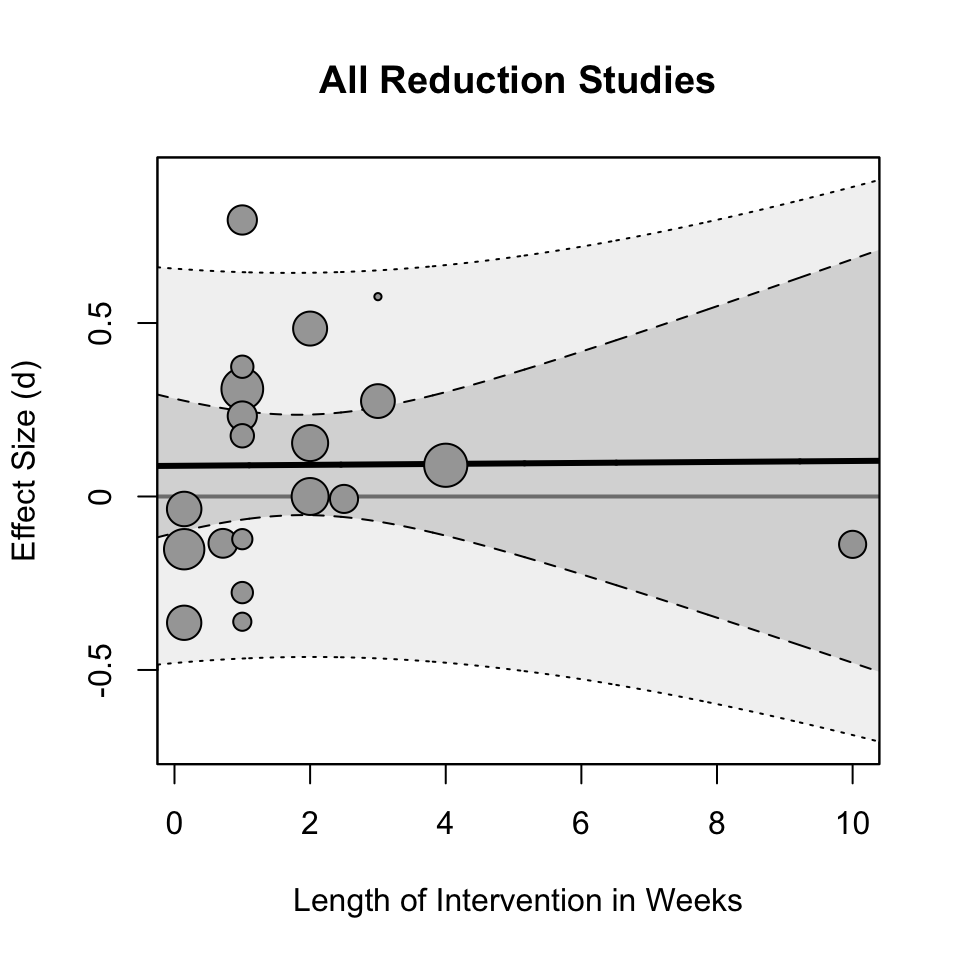

A Statistical Interrogation of “The Case for Causality, Part 1” by Rausch and Haidt
meta-analysis
social media
I don’t know anything about the literature on social media and mental health so my focus on this post is to interrogate the statistical approach taken by the article written by Zach Rausch and Jonathon Haidt (link here) and to some extent the original meta-analysis by Ferguson.
Author
Matthew B. Jané
Published
August 29, 2024
Introduction
The article by Rausch and Haidt (R&H) conducts a re-analysis of a meta-analysis by Ferguson (2024) on RCTs assessing the causal effect (for the sake of this post, I am avoiding any causal inference issues) of social media usage on outcomes related to well-being (e.g., life satisfaction, anxiety). However, the re-analysis conducted by R&H has severe flaws. Generally speaking, if you conduct a re-analysis of any study you should be certain that the re-analysis is of higher methodological quality than the original study. That is not the case here. This blog will get a bit technical, but it is important because meta-analysis isn’t just crunching numbers across studies. There is a formal statistical model that we should adhere to to actually produce coherent and interpretable results.
The original meta-analysis by Ferguson (2024) is not without a number of flaws, but I think it accomplished what it set out to do. Notably, the meta-analysis was pre-registered, transparent, and had publicly available data. The only problem with the open data is that the statistics used to calculate the effect sizes (reported t-statistics, means, SDs, etc.) are completely missing from the database which makes reproducing it a lot harder.
Ferguson (2024)’s meta-analysis has a couple things that stood out to me as I was skimmed through it. It seems that all measures related to mental health and well-being are combined even if they are conceptually quite different (e.g., self-esteem and anxiety). When a study reported multiple different outcome measures, Ferguson decided to pool them together presumably to handle the dependency in effects. This is not an ideal strategy for two reasons, it assumes there is no heterogeneity between outcomes and it also loses specificity in the outcome. It would have been nice to see narrower bins of constructs meta-analyzed separately such as clinical anxiety/depression measures or life satisfaction/subjective well-being measures.
Also, the results convey a common misinterpretation of the estimate in a random effects meta-analysis. The meta-analytic estimate was communicated as follows:
As can be seen the overall estimate for d across studies was 0.088, which was nonsignificant and well below the SESOI (r = .10, d = 0.21).
What does an “overall estimate for d” actually mean (note: d is the effect size, we will talk about this in the next section)? Is there a true d that we are estimating by averaging the d values from all these studies together? No. A random-effects meta-analysis is estimating the mean of true effect sizes. That is, there exists a distribution of true effects and the meta-analytic estimate conveys the central tendency. Therefore, the meta-analytic estimate can not tell you whether the the intervention produces an effect of d = .088 (lets ignore the variability in this estimate for the moment), it only tells you that the effect is d = .088, on average. Heterogeneity in effect sizes describes how wide the distribution of true effects is. You could have genuine true effects that are very positive (i.e., social media use is detrimental) and very negative (i.e., social media use is beneficial) even if the meta-analytic estimate is zero. There also could be study-level characteristics that could account for this heterogeneity, for instance, studies using a particular type of experimental design or a certain outcome shows a positive effect while others don’t.
A side note: I also came across this sentence from Ferguson (2024)’s meta-analysis on page 3:
Given the high power of meta-analysis, almost all meta-analyses are “statistically significant.”
I have heard this before but it is just not true, in general. In a random effects meta-analysis where you have both within and between study variance can give pretty wide confidence intervals and large p-values. This would be a reasonable statement if you are referring to a fixed effect meta-analysis with a large total sample size or a random effect meta-analysis with a ton of studies. Neither of which are true in this case.
Let’s get into it
The first part of this blog sets up a statistical meta-analysis model called a random-effects model. It is important to keep in mind that a meta-analysis is not throwing a bunch of standardized effects into a calculator and computing a mean. We need a coherent statistical model that allows us to draw meaningful inferences from the data.
Effect Size of Interest
First thing we should do is to define the effect size we are using to quantify the effect of social media on well-being related outcomes. The article by Ferguson (2024) says they used a standardized mean difference known as a Cohen’s d to quantify the difference between the post-test scores in the social media using group and the non-social media using group (or some variation of that). You may think “we should be controlling for baseline differences between treatment and control groups”, well in an RCT subject’s are randomly allocated to each group so their baseline scores should be, on average, the same. We can define a (true) effect size \(\delta\) as,
where \(\mu_\textrm{social}\) and \(\mu_\textrm{no social}\) is the mean of post-test scores for the social media using group and the non-social media using group (i.e., control group), respectively. The standardizer \(\sigma\) is the within-group standard deviation and it assumes that both the social media and non-social media group have the same standard deviation (probably a fine assumption 🤷). A sample estimator of the effect size will be denoted as \(d\) and it represents the effect size we actually observe from the results of a study,
\[
d = \frac{m_\textrm{social} - m_\textrm{no social}}{s_\mathrm{pooled}},
\tag{2}\]
where English letters denote the sample estimators of the corresponding parameters in Equation 1. The standardizer \(s_\mathrm{pooled}\) here is the pooled standard deviation. Since we only have access to the standard deviation of each group we have to pool them together to get a more precise estimate of \(\sigma\) (again, we are assuming the standard deviations within both groups are equal in the population),
I will note here, that there was no correction for small sample bias in the original meta-analysis as far as I could tell so I will not apply any correction here.
Statistical Model
Ultimately, the observed effect size \(d\) is a sample estimate of the true effect size \(\delta\) and therefore will contain error. This error is referred to as sampling error and is defined as the difference between the observed effect size and the true effect size. For a given study \(i\), we can relate the observed effect size \(d_i\) and the true effect size \(\delta_i\) by including a sampling error term (\(\varepsilon_i\)),
\[
d_i = \delta_i + \varepsilon_i
\] where \(\varepsilon_i\) is literally defined as \(\varepsilon_i = d_i - \delta_i\). The extent to which sampling errors are obscuring our effect size can be captured by the sampling variance. We can assume that sampling errors are normally distributed and evenly distributed around zero such that, \(\varepsilon_i \sim \mathcal{N}(0,v_i)\) where \(v_i\) is the sampling variance for study \(i\). The sampling variance for a given study is dependent on the sample size with larger samples having more precision and thus less variance. Assuming normally distributed data, the sampling variance of the standardized mean difference (Equation 2) is calculated with the following formula,
\[
v = \left(\frac{n-1}{n-3}\right) \left(\frac{n}{n_\textrm{social}n_\textrm{no social}}\right)\left( \frac{d^2}{2n}\right)
\]
where \(n=n_\textrm{social}+n_\textrm{no social}\). However unfortunately, the available dataset from Ferguson (2024) did not provide the sample sizes within each group so instead we will have to assume they are equal (\(n_\textrm{social}=n_\textrm{no social}\)) and use the simplified formula,
\[
v = \left(\frac{n-1}{n-3}\right) \left(\frac{4}{n}\right)\left(1 + \frac{d^2}{8}\right)
\]
Now we might expect that any variation in effect sizes across studies is attributable to variance in random sampling errors, however this is unlikely to be the case. In reality, effect sizes tend to vary across studies above and beyond what we would expect from sampling error alone. This extra variation (known as heterogeneity) in effect sizes could be due to sampling from different populations, utilizing different methodologies, using different measures, etc.
Recall that we modeled an observed effect size as the sum of the true effect size for that study and sampling error \(d_i = \delta_i + \varepsilon_i\). We defined the distribution of sampling errors so now we can also define the distribution of true effect sizes as \(\delta_i \sim \mathcal{N}(\mu_\delta,\tau^2)\) where \(\mu_\delta\) is the mean of true effect sizes across studies and \(\tau^2\) is the variance of true effect sizes (i.e., heterogeneity). Ultimately our goal in a meta-analysis is to estimate both \(\mu_\delta\) and \(\tau\). The common misinterpretation in (random-effect) meta-analyses that I described in the introduction is that a meta-analysis is estimating a single true effect size. If there is heterogeneity (\(\tau^2 > 0\)) then there is a distribution of true effects that we must consider.
Parameter estimation
In meta-analysis we are trying to estimate particular parameters (i.e., the mean \(\mu_\delta\) and variance \(\tau\) of true effect sizes) just like any other statistical model. Simply averaging study effect sizes to obtain some “overall” effect size is not a principled statistical approach. This is why we went through the trouble of describing a random effects model in the previous section. We want to estimate the mean of true effect sizes (not the “overall effect size” or “the true effect size”). To estimate the mean of true effects \(\mu_\delta\) we can not just calculate the arithmetic mean of observed effect sizes. Instead we must use appropriate weights that take advantage of differential precision across studies. Particularly, we want to weight each study by the inverse variance,
\[
w_i = \frac{1}{\tau^2 + v_i}
\] This will preferentially weight studies with less sampling variance (i.e., larger sample sizes). Also, since \(\tau^2\) is the same for all studies, the larger \(\tau^2\) is relative to \(v_i\) then the weights will become more equal across studies. We can then use these weights to estimate the mean true effect size by taking a weighted average of observed effect sizes across \(k\) studies,
\[
\hat{\mu}_\delta = \frac{\sum^k_{i=1} w_i d_i}{\sum^k_{i=1} w_i}
\] where the little carrot \(\hat{\cdot}\) denotes an estimate. We can also compute the 95% confidence interval of \(\hat{\mu}_\delta\) (the set of plausible values of the actual mean that are compatible with the data) using the Hartung, Knapp, Sidik and Jonkman method (this adjusts for poor coverage rates in small \(k\) meta-analyses, which is the case here),
\[
CI = \hat{\mu}_\delta \pm 1.96 \cdot\sqrt{\frac{\sum^k_{i=1}w_i(d_i-\mu_\delta)^2}{(k-1)\sum^k_{i=1}w_i}}
\]
The last two things we want to estimate are the variance in true effects \(\tau^2\) and what is known as a prediction interval. The variance in true effects is estimated a variety of different ways and we won’t go through all of them here. Instead we will exclusively use a restricted maximum likelihood estimator (REML) which is an iterative estimation procedure. Ferguson (2024) uses a maximum likelihood estimator (ML), however ML tends to under-estimate the heterogeneity. The 95% prediction interval uses the information from \(\hat{\tau}\) to construct an interval that can be interpreted as the interval where 95% of true effect sizes fall.
\[
PI = \hat{\mu}_\delta \pm 1.96 \cdot\hat\tau
\]
So just keep in mind that the \(CI\) describes the variability in the estimate of the mean and \(PI\) describes the variability in the true effects.
Okay now that we have set up our model, we can now actually look at the data from the meta-analysis. Let’s load in some R packages and the dataset from the OSF repository referenced in Ferguson (2024).
# load in packageslibrary(osfr)library(tidyverse)library(metafor)library(readxl)library(psychmeta)# download data from OSF reporead_xlsx("~/Documents/MatthewBJane/blog-posts/Best Practices Coding Experiments.xlsx")
# A tibble: 35 × 16
Citation block n d Standardized Outcome…¹ `Validated Outcomes`
<chr> <lgl> <dbl> <dbl> <dbl> <dbl>
1 Alcott 2020 NA 1661 0.09 1 1
2 Brailovskaia … NA 286 0.154 1 1
3 Brailovskaia … NA 322 0 1 1
4 Collins and E… NA 121 -0.138 1 1
5 Deters & Mehl… NA 86 -0.207 1 1
6 Faulhaber et … NA 230 0.484 1 1
7 Gajdics 2022 NA 235 -0.364 1 1
8 Hall et al. 2… NA 130 -0.007 1 1
9 Hunt 2018 NA 143 0.232 1 1
10 Hunt 2021 NA 88 0.374 1 1
# ℹ 25 more rows
# ℹ abbreviated name: ¹`Standardized Outcomes`
# ℹ 10 more variables: `Matched Control Condition` <dbl>,
# `Distractor Questionnaires` <dbl>, `Query hypothesis guessing` <dbl>,
# Preregistration <dbl>, Age <dbl>, Year <dbl>, `Best Practices Total` <dbl>,
# `Verified 1= yes, 2=no` <dbl>, `Ratio at post` <dbl>,
# `Citation Bias 1=yes, 2 = no` <dbl>
# load in dataset and filter out studies without datadat <-read_excel("Best Practices Coding Experiments.xlsx",sheet =1) %>%filter(!is.na(d))# display effect size data for first 6 studieshead(dat[c("Citation","n","d")])
# A tibble: 6 × 3
Citation n d
<chr> <dbl> <dbl>
1 Alcott 2020 1661 0.09
2 Brailovskaia 2020 286 0.154
3 Brailovskaia 2022 322 0
4 Collins and Edgers 2022 121 -0.138
5 Deters & Mehl 2013 86 -0.207
6 Faulhaber et al., 2023 230 0.484
The data only gives us the effect size d and the sample size n for each study so we need to calculate the sampling variance. Using the psychmeta package we can calculate the sampling variance for each study as follows,
# A tibble: 6 × 4
Citation n d v
<chr> <dbl> <dbl> <dbl>
1 Alcott 2020 1661 0.09 0.00241
2 Brailovskaia 2020 286 0.154 0.0141
3 Brailovskaia 2022 322 0 0.0125
4 Collins and Edgers 2022 121 -0.138 0.0337
5 Deters & Mehl 2013 86 -0.207 0.0479
6 Faulhaber et al., 2023 230 0.484 0.0181
Now we are set up to fit a random effects model. Using the metafor package we can use the REML method for estimating the heterogeneity and the Hartung-Knapp-Sidik-Jonkman method for obtaining the confidence intervals and p-values.
mdl <-rma(yi = d, vi = v, data = dat,method ="REML",test="knha")mdl
Random-Effects Model (k = 27; tau^2 estimator: REML)
tau^2 (estimated amount of total heterogeneity): 0.0564 (SE = 0.0230)
tau (square root of estimated tau^2 value): 0.2374
I^2 (total heterogeneity / total variability): 76.62%
H^2 (total variability / sampling variability): 4.28
Test for Heterogeneity:
Q(df = 26) = 91.9083, p-val < .0001
Model Results:
estimate se tval df pval ci.lb ci.ub
0.0879 0.0576 1.5249 26 0.1394 -0.0306 0.2063
---
Signif. codes: 0 '***' 0.001 '**' 0.01 '*' 0.05 '.' 0.1 ' ' 1
We are pretty much able to reproduce the results seen in Ferguson (2024) with slight differences probably due to having to assume equal sample sizes between groups, using a different heterogeneity estimator and using the Hartung-Knapp-Sidik-Jonkman method for the confidence intervals. Let’s get the 95% prediction interval as well.
predict.rma(mdl)
pred se ci.lb ci.ub pi.lb pi.ub
0.0879 0.0576 -0.0306 0.2063 -0.4143 0.5901
So, 95% of true effects fall between -.41 and .59 according to our model.
R&H’s analysis
R&H conduct a sub-group analysis by chopping up the studies into three bins. First issue here is that this analysis is completely post-hoc and who knows if they created these bins after trying various combinations to reach the conclusion that they desired. R&H separate the 27 studies into three bins (this is verbatim from the article):
Multi-week reduction experiments. These ten studies examined the impact of reducing social media use for at least two weeks, allowing withdrawal symptoms to dissipate.
Short (one week or less) reduction experiments. These ten studies examined brief periods of abstinence from social media use, which are likely to pick up withdrawal symptoms from heavy users.
Exposure experiments. In these seven studies, the ‘treatment’ is typically brief exposure to some kind of social media, such as requiring high school students to look at their Facebook or Instagram page for 10 minutes.
The second problem we see is that the first two groups are separated by dichotomizing a naturally continuous variable (length of intervention). Sure it makes the data more digestible, but you simply lose information. This is generally considered bad statistical practice and we will see why a little later.
To reproduce R&H’s analysis, we will add a column to the data set that denotes the group membership (1 = Multi-week reduction experiments, 2 = One week reduction experiments, 3 = Less than one week reduction experiments, 4 = Exposure experiments) of each study.
Now that we have the subgroup column, we can conduct the sub-group analysis. Here comes the next problem, R&H decide to simply calculates the arithmetic (unweighted) mean of the observed effect sizes within each group. The problem is that they aren’t capitalizing on the fact that different studies have different levels of precision. The only way it would make sense to compute an unweighted average with respect to the statistical model we are employing is if sampling error didn’t exist (it does) or heterogeneity is infinite (its not), so either way its just the wrong approach.
Let’s first reproduce R&H’s results by taking the unweighted average of observed effect sizes.
All the values are accurate. We can compare it to the table shown in R&H’s article:
Okay we see a positive average effect for the multi-week reduction experiments, but lets now use proper inverse-variance weights to calculate the average. This time we will model the groups as dummy predictors and specify the proper contrasts for each group:
# construct a meta-analytic model with subgroup# as a dummy-coded categorical predictormdl <-rma(d ~factor(subgroup,levels =c(1,2,3,4)), vi = v, data = dat,test="knha")# acquire subgroup-level mean estimatesestimates <-as.data.frame(predict(mdl, rbind(g1 =c(0,0,0),g2 =c(1,0,0),g3 =c(0,1,0),g4 =c(0,0,1))))# print resultsround(data.frame(group =1:4, mean_delta = estimates$pred),3)
As we can see the estimates are a bit different. Another thing that is completely missing from the R&H analysis is any indication of variability in their mean estimates and their is no indication of heterogeneity. It is conveyed as a fixed quantity, however just because we combine many studies together does not mean that uncertainty ceases to exist.
True effects for group 1 (multi-week reduction studies, i.e., the focal group) are quite variable and can range from -0.296 to 0.651. An interesting point to bring up is that Ferguson (2024) set the smallest effect size of interest (SESOI) to be d = .21 in his pre-registration (equivalent to a Pearson correlation of r = .10). However, that does not help us much here since the upper bound of the confidence interval is well above d = .21 so you can’t really make the claim that that there is no clinically meaningful effect, on average. And you definitely can’t make the claim that all/most true effects are not clinically meaningful since the upper bound of the PI is 0.651. Truthfully, the SESOI established in Ferguson (2024) does not seem to have any good theoretical or practical justification outside of “seems reasonable” so it is unclear what the utility of this arbitrary boundary is in this case?
Properly modeling the length of intervention in reduction studies
Instead of binning the length of the intervention into groups I will use the weeks reported in the R&H article to create a continuous moderator for reduction studies only.
# A tibble: 6 × 5
Citation n d v length_weeks
<chr> <dbl> <dbl> <dbl> <dbl>
1 Alcott 2020 1661 0.09 0.00241 4
2 Brailovskaia 2020 286 0.154 0.0141 2
3 Brailovskaia 2022 322 0 0.0125 2
4 Collins and Edgers 2022 121 -0.138 0.0337 10
5 Deters & Mehl 2013 86 -0.207 0.0479 NA
6 Faulhaber et al., 2023 230 0.484 0.0181 2
Okay so now we have the moderator we can construct a linear meta-regression model of the form,
\[
d_i = b_0 + b_1 X_\mathrm{length} + u_i + \varepsilon_i
\] Notice now that true effects how is distributed around the regression line such that the distribution of true effects is now
Okay so as it turns out there appears to be little/no effect of the length of the intervention on the effect size. Let us plot out the data to see what the relationship actually looks like:

The regression line looks almost parallel to the d = 0 line (the grey line). You may notice the outlier at 10 weeks and you may want to remove it from the analysis. I would ask why? The data point does not appear to be a coding error or a mistake? It is a valid data point and piece of evidence that should not be taken out of the analysis post-hoc. Hell, it could be that the the positive effect of not being on social media only lasts a few weeks and then fades out (not an uncommon trend in psychology interventions). Anyways, any reason to remove that “outlier” would seem to me like a post-hoc rationalization.
Discussion
The re-analysis of Ferguson (2024)’s meta-analysis by R&H does not have adequate statistical rigor to build a “case for causality”. Post-hoc subgroup analyses conducted by R&H did not use a principled statistical model, they did not report any variability in their estimates, the estimates themselves were sub-optimal (unweighted averaging), and they misinterpreted the point-estimates that they calculated. They did not do a proper comparison of their point-estimates and instead they treated them as fixed quantities and simply claimed that these average effect sizes are different without consideration of variability in their estimation procedure. Their conclusion claimed that:
we still found that his data supports (rather than undermines) the contention by some scholars that “reductions in social media time would improve adolescent mental health,” at least as long as the reductions continue for two weeks or longer.
Based on my re-analysis of R&H’s re-analysis I find that the intervention length when modeled properly as a continuous variable (since it literally is) does not support this claim.
If I did anything incorrectly or if I did not use best practices, I take full responsibility and you can let me know by sending me a DM on twitter or emailing me at matthewbjane@gmail.com.
References
Ferguson, Christopher J. 2024. “Do Social Media Experiments Prove a Link with Mental Health: A Methodological and Meta-Analytic Review.”Psychology of Popular Media, No Pagination Specified–. https://doi.org/10.1037/ppm0000541.